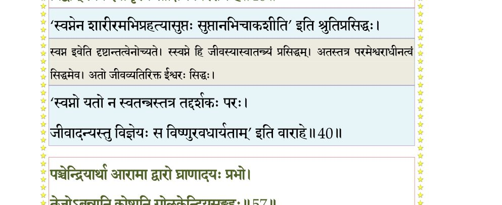
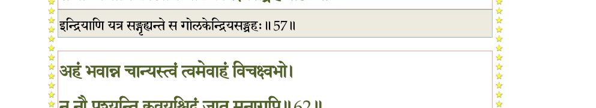
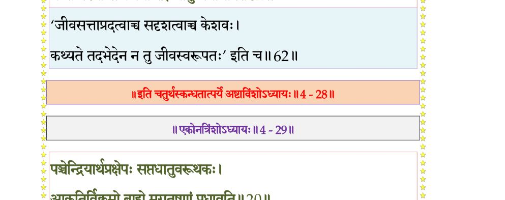

स्कन्ध 4 · अध्याय 28
श्लोक १
नारद उवाच–
सैनिका भयनाम्नो ये बर्हिष्मन् दिष्टकारिणः ।
प्रज्वारकालकन्याभ्यां विचेरुरवनीमिमाम्।। १ ।।
सैनिका भयनाम्नो ये बर्हिष्मन् दिष्टकारिणः ।
प्रज्वारकालकन्याभ्यां विचेरुरवनीमिमाम्।। १ ।।
श्लोक २
त एकदा तु रभसा पुरञ्जनपुरीं नृप ।
रुरुधुर्भौमभोगाढ्यां जरत्पन्नगपालिताम्।। २ ।।
रुरुधुर्भौमभोगाढ्यां जरत्पन्नगपालिताम्।। २ ।।
श्लोक ३
कालकन्याऽपि बुभुजे पुरञ्जनपुरीं बलात् ।
ययाऽभिभूतः पुरुषः सद्यो निस्सारतामियात्।। ३ ।।
ययाऽभिभूतः पुरुषः सद्यो निस्सारतामियात्।। ३ ।।
श्लोक ४
तयोपभुज्यमानां वै यवनाः सर्वतो दिशम् ।
द्वार्भिः प्रविश्य सुभृशं प्रार्दयन् सकलां पुरीम्।। ४ ।।
द्वार्भिः प्रविश्य सुभृशं प्रार्दयन् सकलां पुरीम्।। ४ ।।
श्लोक ५
तस्यां प्रपीड्यमानायामभिमानी पुरञ्जनः ।
अवापोरुविधांस्तापान् कुटुम्बी ममताकुलः।। ५ ।।
अवापोरुविधांस्तापान् कुटुम्बी ममताकुलः।। ५ ।।
श्लोक ६
कन्योपगूढो नष्टश्रीः कृपणो विषयात्मकः ।
नष्टप्रज्ञो हतैश्वर्यो गन्धर्वयवनैर्बलात्।। ६ ।।
नष्टप्रज्ञो हतैश्वर्यो गन्धर्वयवनैर्बलात्।। ६ ।।
श्लोक ७
विशीर्णां स्वपुरीं वीक्ष्य प्रतिकूलाननादृतान् ।
पुत्रपौत्रानुगामात्यान् जायां च गतसौहृदाम्।। ७ ।।
पुत्रपौत्रानुगामात्यान् जायां च गतसौहृदाम्।। ७ ।।
श्लोक ८
आत्मानं कन्यया ग्रस्तं पाञ्चालानरिदूषितान् ।
दुरन्तचिन्तामापन्नो न लेभे तत्प्रतिक्रियाम्।। ८ ।।
दुरन्तचिन्तामापन्नो न लेभे तत्प्रतिक्रियाम्।। ८ ।।
श्लोक ९
कामानभिलषन् दीनो यातयामांश्च कन्यया ।
मतात्मसंविन्निस्स्नेहः पुत्रदारांश्च लालयन्।। ९ ।।
मतात्मसंविन्निस्स्नेहः पुत्रदारांश्च लालयन्।। ९ ।।
श्लोक १०
गन्धर्वयवनाक्रान्तां कालकन्योपमर्दिताम् ।
हातुं प्रचक्रमे राजा तां पुरीमनिकामतः।। १० ।।
हातुं प्रचक्रमे राजा तां पुरीमनिकामतः।। १० ।।
श्लोक ११
भयनाम्नोऽग्रजो भ्राता प्रज्वारः प्रत्युपस्थितः ।
ददाह तां पुरीं कृत्स्नां भ्रातुः प्रियचिकीर्षया।। ११ ।।
ददाह तां पुरीं कृत्स्नां भ्रातुः प्रियचिकीर्षया।। ११ ।।
श्लोक १२
तस्यां सन्दह्यमानायां सपौरः सपरिच्छदः ।
कौटुम्बिकः कुटुम्बिन्या उपातप्यत सान्वयः।। १२ ।।
कौटुम्बिकः कुटुम्बिन्या उपातप्यत सान्वयः।। १२ ।।
श्लोक १३
यवनोपरुद्धायतनो ग्रस्तायां कालकन्यया ।
पुर्यां प्रज्वारसंस्पृष्टः पुरपालोऽन्वतप्यत।। १३ ।।
पुर्यां प्रज्वारसंस्पृष्टः पुरपालोऽन्वतप्यत।। १३ ।।
श्लोक १४
न शेके सेवितुं तत्र पुरुकृच्छ्रोरुवेपथुः ।
गन्तुमैच्छत् ततो वृक्षकोटरादिव सानलात्।। १४ ।।
गन्तुमैच्छत् ततो वृक्षकोटरादिव सानलात्।। १४ ।।
श्लोक १५
शिथिलावयवो यर्हि गन्धर्वैर्हृतपौरुषः ।
यवनैररिभी राजन्नुपरुद्धो रुरोद ह।। १५ ।।
यवनैररिभी राजन्नुपरुद्धो रुरोद ह।। १५ ।।
श्लोक १६
दुहितॄः पुत्रपौत्रांश्च जामिजामातृपार्षदान् ।
स्मृत्वाऽवशिष्टं यत्किञ्चिद् गृहकोशपरिच्छदम्।। १६ ।।
स्मृत्वाऽवशिष्टं यत्किञ्चिद् गृहकोशपरिच्छदम्।। १६ ।।
श्लोक १७
अहं ममेति स्वीकृत्य गृहेषु कुमतिर्गृही ।
दध्यौ प्रमदया दीनो विप्रयोग उपस्थिते।। १७ ।।
दध्यौ प्रमदया दीनो विप्रयोग उपस्थिते।। १७ ।।
श्लोक १८
लोकान्तरं गतवति मय्यनाथा कुटुम्बिनी ।
वर्तिष्यते कथं त्वेषा बालकाननुशोचती।। १८ ।।
वर्तिष्यते कथं त्वेषा बालकाननुशोचती।। १८ ।।
श्लोक १९
न मय्यनशिते भुङ्क्ते नास्नाते स्नाति मत्परा ।
मयि तुष्टे सुसन्तुष्टा भर्त्सिते यतवाग् भयात्।। १९ ।।
मयि तुष्टे सुसन्तुष्टा भर्त्सिते यतवाग् भयात्।। १९ ।।
श्लोक २०
प्रबोधयति माऽविज्ञं व्युषिते शोककर्षिता ।
वर्त्मैतद् गृहमेधीयं वीरसूरपि नेष्यति।। २० ।।
वर्त्मैतद् गृहमेधीयं वीरसूरपि नेष्यति।। २० ।।
श्लोक २१
कथं नु दारिका दीना दारका मत्परायणाः ।
वर्तिष्यन्ते मयि गते भिन्ननाव इवोदधौ।। २१ ।।
वर्तिष्यन्ते मयि गते भिन्ननाव इवोदधौ।। २१ ।।
श्लोक २२
एवं कृपणया बुद्ध्या शोचन्तमतदर्हणम् ।
ग्रहीतुं कृतधीरेनं भयनामाऽभ्यपद्यत।। २२ ।।
ग्रहीतुं कृतधीरेनं भयनामाऽभ्यपद्यत।। २२ ।।
श्लोक २३
पशुवद् यवनेनैष नीयमानः स्वकं क्षयम् ।
अन्वद्रुवन्ननुपथाः शोचन्तो भृशमातुराः।। २३ ।।
अन्वद्रुवन्ननुपथाः शोचन्तो भृशमातुराः।। २३ ।।
श्लोक २४
पुरीं विहायोपगत उपरुद्धो विहङ्गमः ।
तदा तमेवानुपुरी विशीर्णा प्रकृतिं गता।। २४ ।।
तदा तमेवानुपुरी विशीर्णा प्रकृतिं गता।। २४ ।।
श्लोक २५
विकृष्यमाणः प्रसभं यवनेन बलीयसा ।
नाविन्दत् तमसाऽऽविष्टः सखायं सुहृदं परम्।। २५ ।।
नाविन्दत् तमसाऽऽविष्टः सखायं सुहृदं परम्।। २५ ।।
श्लोक २६
तं यज्ञपशवोऽनेन संज्ञप्ता येऽदयालुना ।
कुठारैश्चिच्छिदुः क्रुद्धाः स्मरन्तो वैशसं तु तत्।। २६ ।।
कुठारैश्चिच्छिदुः क्रुद्धाः स्मरन्तो वैशसं तु तत्।। २६ ।।
श्लोक २७
अनन्तपारे तमसि मग्नो नष्टस्मृतिः समाः ।
शाश्वतीरनुभूयार्तीः प्रमदासङ्गदूषितः।। २७ ।।
शाश्वतीरनुभूयार्तीः प्रमदासङ्गदूषितः।। २७ ।।
श्लोक २८
तामेव मनसा गृह्णन् बभूव प्रमदोत्तमा ।
अनन्तरं विदर्भस्य राजसिंहस्य वेश्मनि।। २८ ।।
अनन्तरं विदर्भस्य राजसिंहस्य वेश्मनि।। २८ ।।
श्लोक २९
उपयेमे वीर्यपणां वैदर्भीं मलयध्वजः ।
युधि निर्जित्य राजन्यान् पाण्ड््यः परपुरञ्जयः।। २९ ।।
युधि निर्जित्य राजन्यान् पाण्ड््यः परपुरञ्जयः।। २९ ।।
श्लोक ३०
तस्यां सञ्जनयांचक्रे आत्मजामसितेक्षणाम् ।
यवीयसः सप्तसुतान् सप्तद्रविडभूभृतः।। ३० ।।
यवीयसः सप्तसुतान् सप्तद्रविडभूभृतः।। ३० ।।
श्लोक ३१
एकैकस्याभवत् तेषां राजन्नर्बुदमर्बुदम् ।
भोक्ष्यते यद्वंशधरैर्मही मन्वन्तरं परम्।। ३१ ।।
भोक्ष्यते यद्वंशधरैर्मही मन्वन्तरं परम्।। ३१ ।।
श्लोक ३२
अगस्त्यः प्राग्दुहितरमुपयेमे धृतव्रताम् ।
यस्यां दृढच्युतो जात इध्मवासात्मजो मुनिः।। ३२ ।।
यस्यां दृढच्युतो जात इध्मवासात्मजो मुनिः।। ३२ ।।
श्लोक ३३
विभज्य तनयेभ्यः क्ष्मां राजर्षिर्मलयध्वजः ।
आरिराधयिषुः कृष्णं स जगाम कुलाचलम्।। ३३ ।।
आरिराधयिषुः कृष्णं स जगाम कुलाचलम्।। ३३ ।।
श्लोक ३४
हित्वा गृहान् सुतान् भोगान् वैदर्भी मदिरेक्षणा ।
अन्वधावत पाण्ड््येशं ज्योत्स्नेव रजनीकरम्।। ३४ ।।
अन्वधावत पाण्ड््येशं ज्योत्स्नेव रजनीकरम्।। ३४ ।।
श्लोक ३५
तत्र चन्द्रवटा नाम ताम्रपर्णी परोदका ।
तत्पुण्यसलिलैर्नित्यमुभयत्रात्मनो मृजन्।। ३५ ।।
तत्पुण्यसलिलैर्नित्यमुभयत्रात्मनो मृजन्।। ३५ ।।
श्लोक ३६
कन्दादिभिर्मूलफलैः पुष्पपर्णैस्तृणोदकैः ।
वर्तमानः शनैर्गात्रकर्षणं तप आस्थितः।। ३६ ।।
वर्तमानः शनैर्गात्रकर्षणं तप आस्थितः।। ३६ ।।
श्लोक ३७
शीतोष्णवातवर्षाणि क्षुत्पिपासे प्रियाप्रिये ।
सुखदुःखे इति द्वन्द्वान्यजयत् समदर्शनः।। ३७ ।।
सुखदुःखे इति द्वन्द्वान्यजयत् समदर्शनः।। ३७ ।।
श्लोक ३८
तपसा विद्यया पक्वकषायो नियमैर्यमैः ।
युयुजे ब्रह्मणाऽऽत्मानं विजिताक्षानिलाशयः।। ३८ ।।
युयुजे ब्रह्मणाऽऽत्मानं विजिताक्षानिलाशयः।। ३८ ।।
श्लोक ३९
आस्ते स्थाणुरिवैकत्र दिव्यं वर्षशतं स्थितः ।
वासुदेवे भगवति नान्यद् वेदोद्वहन् रतिम्।। ३९ ।।
वासुदेवे भगवति नान्यद् वेदोद्वहन् रतिम्।। ३९ ।।
श्लोक ४०
स व्यापकतयाऽऽत्मानं व्यतिरिक्ततयाऽऽत्मनि ।
विद्वान् स्वप्न इवामृश्य साक्षिणं विरराम ह।। ४० ।।
विद्वान् स्वप्न इवामृश्य साक्षिणं विरराम ह।। ४० ।।
भागवततात्पर्यनिर्णय

श्लोक ४१
साक्षाद्भगवतोक्तेन गुरुणा हरिणा नृपः ।
विशुद्धज्ञानदीपेन स्फुरता विश्वतो मुखम्।। ४१ ।।
विशुद्धज्ञानदीपेन स्फुरता विश्वतो मुखम्।। ४१ ।।
श्लोक ४२
परे ब्रह्मणि चात्मानं परं ब्रह्म तथाऽऽत्मनि ।
वीक्षमाणो विहायेक्षामस्मादुपरराम ह।। ४२ ।।
वीक्षमाणो विहायेक्षामस्मादुपरराम ह।। ४२ ।।
श्लोक ४३
पतिं परमधर्मज्ञं वैदर्भी मलयध्वजम् ।
प्रेम्णा पर्यचरद्धित्वा भोगान् सा पतिदेवता।। ४३ ।।
प्रेम्णा पर्यचरद्धित्वा भोगान् सा पतिदेवता।। ४३ ।।
श्लोक ४४
चीरवासा व्रतक्षामा वेणीभूतशिरोरुहा ।
बभावुपपतिं शान्ता शिखाशान्तमिवानलम्।। ४४ ।।
बभावुपपतिं शान्ता शिखाशान्तमिवानलम्।। ४४ ।।
श्लोक ४५
अजानती प्रियतमं यदोपरतमङ्गना ।
सुस्थिरासनमासाद्य यथा पूर्वमुपाचरत्।। ४५ ।।
सुस्थिरासनमासाद्य यथा पूर्वमुपाचरत्।। ४५ ।।
श्लोक ४६
यदा नोपलभेताङ्घ्रावूष्माणं पत्युरर्चती ।
आसीत् संविग्नहृदया यूथभ्रष्टा मृगी यथा।। ४६ ।।
आसीत् संविग्नहृदया यूथभ्रष्टा मृगी यथा।। ४६ ।।
श्लोक ४७
आत्मानं शोचती दीनमबन्धुर्विक्लवाऽश्रुभिः ।
स्तनावासिच्य विपिने सुस्वरं प्ररुरोद सा।। ४७ ।।
स्तनावासिच्य विपिने सुस्वरं प्ररुरोद सा।। ४७ ।।
श्लोक ४८
उत्तिष्ठोत्तिष्ठ राजर्षे इमामुदधिमेखलाम् ।
दस्युभ्यः क्षत्रबन्धुभ्यो बिभ्यतीं पातुमर्हसि।। ४८ ।।
दस्युभ्यः क्षत्रबन्धुभ्यो बिभ्यतीं पातुमर्हसि।। ४८ ।।
श्लोक ४९
एवं विलपती बाला विपिनेऽनुगता पतिम् ।
पतिता पादयोर्भर्तू रुदन्त्यश्रूण्यवर्तयत्।। ४९ ।।
पतिता पादयोर्भर्तू रुदन्त्यश्रूण्यवर्तयत्।। ४९ ।।
श्लोक ५०
चितिं दारुमयीं कृत्वा तस्यां पत्युः कलेवरम् ।
आदीप्य चानुमरणे विलपन्ती मनो दधे।। ५० ।।
आदीप्य चानुमरणे विलपन्ती मनो दधे।। ५० ।।
श्लोक ५१
तत्र पूर्वतरः कश्चित् सखा ब्राह्मण आत्मवान् ।
सान्त्वयन् वल्गुना साम्ना तामाह रुदतीं प्रभो।। ५१ ।।
सान्त्वयन् वल्गुना साम्ना तामाह रुदतीं प्रभो।। ५१ ।।
श्लोक ५२
का त्वं कस्यासि को वाऽयं शयानो यस्य शोचसि ।
जानासि किं सखायं मां येनाग्रे विचचर्थ ह।। ५२ ।।
जानासि किं सखायं मां येनाग्रे विचचर्थ ह।। ५२ ।।
श्लोक ५३
अपि स्मरसि चात्मानमविज्ञातसखं सखे ।
हित्वा मां पदमन्विच्छन् भौमभोगरतो गतः।। ५३ ।।
हित्वा मां पदमन्विच्छन् भौमभोगरतो गतः।। ५३ ।।
श्लोक ५४
हंसावहं च त्वं चार्य सखायौ मानसायनौ ।
अवात्स्व रमणौ चोभौ सहस्रपरिवत्सरान्।। ५४ ।।
अवात्स्व रमणौ चोभौ सहस्रपरिवत्सरान्।। ५४ ।।
श्लोक ५५
स त्वं विहाय मां बन्धो गतो ग्राम्यमतिर्महीम् ।
विचरन् पदमद्राक्षीः कयाचिन्निर्मितं स्त्रिया।। ५५ ।।
विचरन् पदमद्राक्षीः कयाचिन्निर्मितं स्त्रिया।। ५५ ।।
श्लोक ५६
पञ्चारामं नवद्वारमेकपालं त्रिकोष्ठकम् ।
षट्कलं पञ्चविपणं पञ्चप्रकृति स्त्रीधवम्।। ५६ ।।
षट्कलं पञ्चविपणं पञ्चप्रकृति स्त्रीधवम्।। ५६ ।।
श्लोक ५७
पञ्चेन्द्रियार्था आरामा द्वारो घ्राणादयः प्रभो ।
तेजोबन्नानि कोष्ठानि गोलकेन्द्रियसंग्रहः।। ५७ ।।
तेजोबन्नानि कोष्ठानि गोलकेन्द्रियसंग्रहः।। ५७ ।।
भागवततात्पर्यनिर्णय

श्लोक ५८
विपणस्तु क्रियाशक्तिर्भूतप्रकृतिरव्यया ।
शक्त्यधीशः पुमानत्र प्रविष्टो नावबुद्ध्यते।। ५८ ।।
शक्त्यधीशः पुमानत्र प्रविष्टो नावबुद्ध्यते।। ५८ ।।
श्लोक ५९
तस्मिंस्त्वं रामया स्पृष्टो रममाणो हतस्मृतिः ।
तत्सङ्गादीदृशीं प्राप्तो दशां पापीयसीं विभो।। ५९ ।।
तत्सङ्गादीदृशीं प्राप्तो दशां पापीयसीं विभो।। ५९ ।।
श्लोक ६०
न त्वं विदर्भदुहिता नायं वीर सुहृत् तव ।
न पतिस्त्वं पुरञ्जन्या रुद्धो नवमुखे यया।। ६० ।।
न पतिस्त्वं पुरञ्जन्या रुद्धो नवमुखे यया।। ६० ।।
श्लोक ६१
माया ह्येषा मया सृष्टा यत् पुमांसं स्त्रियं पतिम् ।
मन्यसे नोभयं यद् वै हंसं पश्यात्मनो गतिम्।। ६१ ।।
मन्यसे नोभयं यद् वै हंसं पश्यात्मनो गतिम्।। ६१ ।।
श्लोक ६२
अहं भवान्न चान्यस्त्वं त्वमेवाहं विचक्ष्व भो ।
न नौ पश्यन्ति कवयश्छिद्रं जातु मनागपि।। ६२ ।।
न नौ पश्यन्ति कवयश्छिद्रं जातु मनागपि।। ६२ ।।
भागवततात्पर्यनिर्णय

श्लोक ६३
यथा पुरुष आत्मानमेकमादर्शचक्षुषोः ।
द्विधाभूतमिवेक्षेत तथैवान्तरमावयोः।। ६३ ।।
द्विधाभूतमिवेक्षेत तथैवान्तरमावयोः।। ६३ ।।
श्लोक ६४
एवं स मानसो हंसो हंसेन प्रतिबोधितः ।
स्वस्थस्तद्व्यभिचारेण नष्टामाप पुनः स्मृतिम्।। ६४ ।।
स्वस्थस्तद्व्यभिचारेण नष्टामाप पुनः स्मृतिम्।। ६४ ।।
श्लोक ६५
बर्हिष्मन्नेतदध्यात्मं पारोक्ष्येण प्रदर्शितम् ।
यत् परोक्षप्रियो देवो भगवान् विश्वभावनः।। ६५ ।।
यत् परोक्षप्रियो देवो भगवान् विश्वभावनः।। ६५ ।।
।। इति श्रीमद्भागवते चतुर्थस्कन्धे अष्टाविंशोऽध्यायः ।।